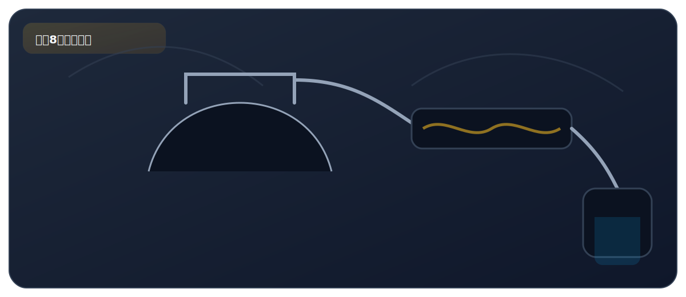

实验八、蒸馏操作

来自 PDF《化学实验基础知识及课本实验总结》的整理。建议：先读“实验原理”，再背“操作顺序”，最后用“误差分析/注意事项”拿分。
实验目标
- 掌握蒸馏装置与操作：利用沸点不同分离液体混合物。
核心原理
- 蒸馏是物理变化：先蒸发后冷凝；用于制取较纯的蒸馏水等。
关键步骤（怎么做）
- 蒸馏烧瓶中加入待蒸馏液体和沸石，连接蒸馏装置。
- 冷凝管通水方向：下进上出；缓慢加热收集馏出液。
高频考点（怎么拿分）
- 温度计水银球位置：位于支管口附近（测蒸气温度）。
- 加沸石防暴沸；蒸馏烧瓶中液体不超过 2/3。
PDF摘录（原文提取，供对照）
要点
- 蒸馏（左图） 物理过程；原理：利用液体的沸点不同，分离液体混合物。
- 加入液体前，应在蒸馏瓶中加入：沸石或碎瓷片；目的是防止 液体暴沸。
- 蒸馏瓶不能直接加热，需垫陶土网；陶土网的作用是使蒸馏瓶 受热均匀，防止炸裂。
注意事项
- 冷凝水需要下进上出；目的是便于冷水充满冷凝管，有利于水 蒸气的冷却。
- 开始馏出的液体有杂质，要弃去。
- 蒸馏水为纯净物。
- 长导管的作用：导气和冷凝。
- 简易蒸馏装置 （右图） 烧杯中的冷水的作用是使水蒸气迅速液化，如果撤掉烧杯，试 管内观察到的现象是出现大量水雾。